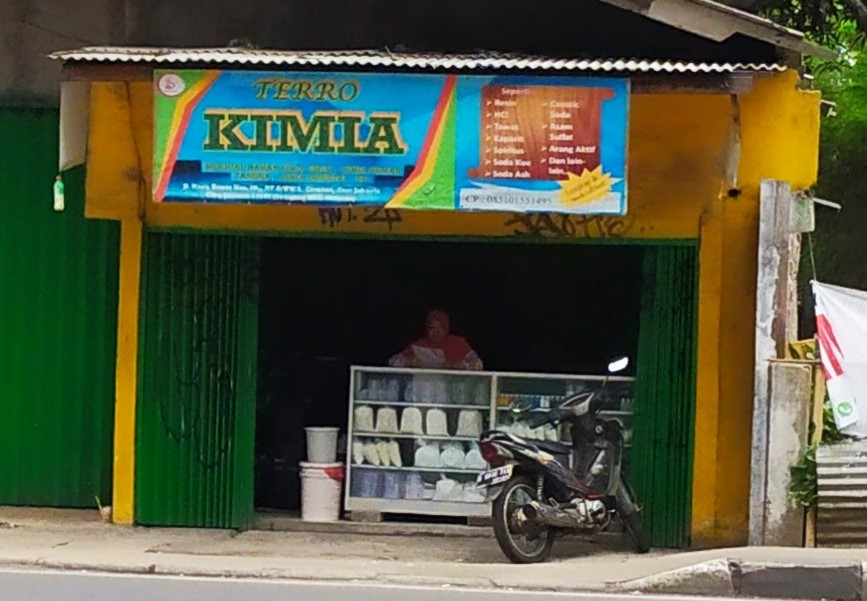
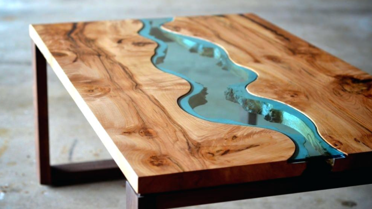
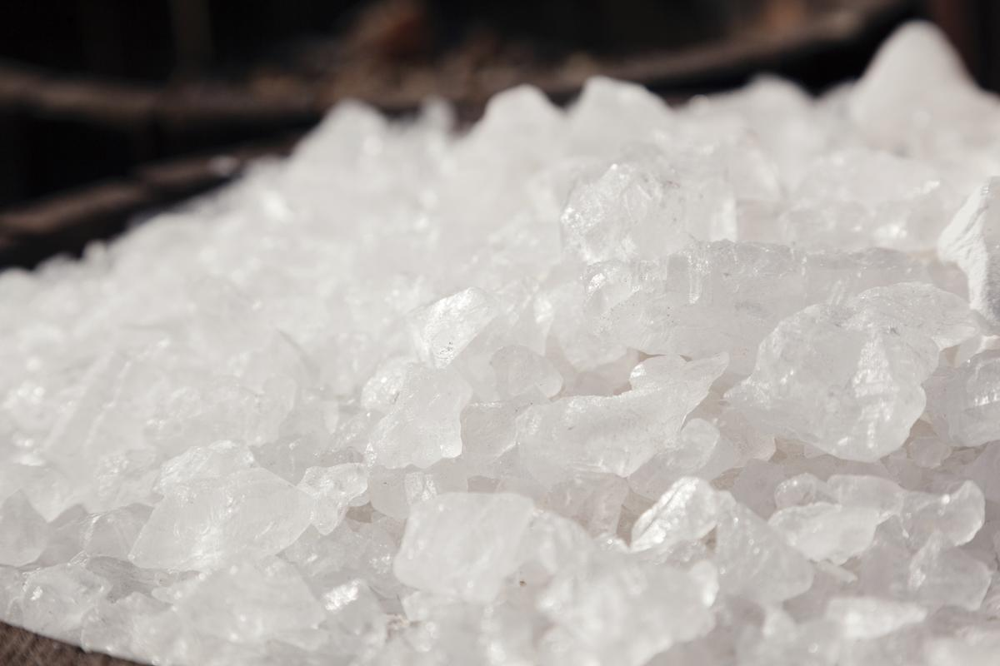
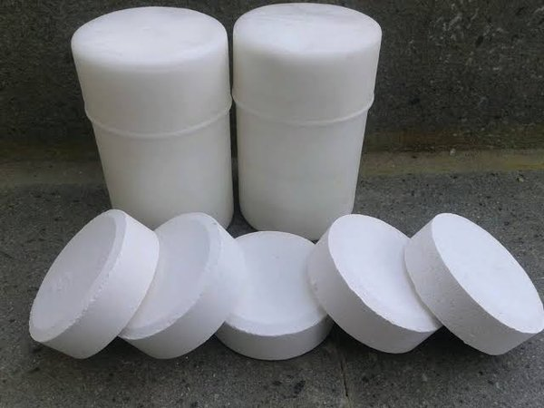

Terro Kimia

Toko Terro Kimia merupakan salah satu toko kimia berkualitas yang berada di wilayah Jakarta. Terro kimia berasal dari 2 kata, yaitu Terro dan Kimia. Terro memiliki arti tiga anak laki-laki bersaudara yang kerap disebut three of brothers. Banyak mimpi yang dibawakan oleh ketiga bersaudara ini. Mimpi yang hebat tersebut dibangun oleh kedua orang tua yang hebat pula.
Toko ini memiliki tagline yaitu Chemical Quality is a Top Priority
. Dari tagline tersebut dapat diartikan bahwa hal yang menjadi prioritas strategi bisnis dari toko ini adalah kualitas dari bahan kimia yang dijualnya. Bahan yang dijual sebagai retail merupakan asli 100% dari supplier. Banyak testimoni dari pelanggan yang mengatakan bahwa produk di toko ini tidak pernah mengecewakan.
Adapun, toko ini beralamat di Jalan Raya Bogor Km. 26, RT.2/RW.8, Ciracas, East Jakarta City, Jakarta 13740 - Samping BBC Ciracas.
Untuk alamat dan ulasan lengkap mengenai toko ini, dapat dibuka di tautan berikut: Terro Kimia di Google Maps
Produk
Berikut berbagai bahan kimia terlaris di toko ini.
Resin + Catalyst

Resin adalah eksudat (getah) yang dikeluarkan oleh banyak jenis tetumbuhan, terutama oleh jenis-jenis pohon runjung (konifer). Getah ini biasanya membeku, lambat atau segera, dan membentuk massa yang keras dan, sedikit banyak, transparan. Resin dipakai orang terutama sebagai bahan pernis, perekat, pelapis makanan (agar mengilat), bahan campuran dupa dan parfum, serta sebagai sumber bahan mentah bagi bahan-bahan organik olahan. Resin telah digunakan orang sejak zaman purba, sebagaimana yang dicatat oleh Theophrastus dari Yunani dan Plinius dari Romawi kuno.
Demi bisa mendapatkan tekstur kuat, campuran berasal dari getah pohon itu dicampurkan kembali dengan beragam unsur kimiawi hingga menghasilkan bahan tak mudah hancur. Ini disebabkan getah dan campuran kimia dari resin itu perlu dibentuk dahulu dengan menggunakan cetakan atau secara manual hingga pada akhirnya dibakar agar mengeras.
Manfaat Resin
Bahan perekat
Pelapis furniture
Bahan kerajinan
Tawas

Tawas (Alum) adalah kelompok garam rangkap berhidrat berupa kristal dan bersifat isomorf. Kristal tawas ini cukup mudah larut dalam air, dan kelarutannya berbeda-beda tergantung pada jenis logam dan suhu.
Alum merupakan salah satu senyawa kimia yang dibuat dari dari molekul air dan dua jenis garam, salah satunya biasanya Al2(SO4)3.
Alum kalium, juga sering dikenal dengan alum, mempunyai rumus formula yaitu K2SO4.Al2(SO4)3.24H2O.
Alum kalium merupakan jenis alum yang paling penting. Alum kalium merupakan senyawa yang tidak berwarna dan mempunyai bentuk kristal oktahedral atau kubus ketika kalium sulfat dan aluminium sulfat keduanya dilarutkan dan didinginkan. Larutan alum kalium tersebut bersifat asam. Alum kalium sangat larut dalam air panas. Ketika kristalin alum kalium dipanaskan terjadi pemisahan secara kimia, dan sebagian garam yang terdehidrasi terlarut dalam air.
Manfaat Tawas
Penjernihan air
Bahan kosmetik
Bahan anti api
Kaporit

Kaporit atau Kalsium hipoklorit adalah senyawa kimia yang memiliki rumus kimia Ca(ClO)2. Kaporit biasanya digunakan sebagai zat disinfektan air. Senyawa ini relatif stabil dan memiliki klorin bebas yang lebih banyak daripada natrium hipoklorit (cairan pemutih).
Kalsium hipoklorit berbentuk padatan putih, meskipun sediaan komersial tampak kuning. Berbau klorin kuat, karena mengalami dekomposisi lambat dalam udara lembap. Sangat sukar larut dalam air dan lebih banyak digunakan dalam air dengan kesadahan rendah hingga sedang. Senyawa ini tersedia dalam dua bentuk, anhidrat dan hidrat.
Manfaat Kaporit
Sanitasi
Kimia organik
Jalur pajanan